Explorá el mundo de la mitología japonesa
Dioses, espíritus y criaturas que habitan entre la naturaleza y lo invisible.
Introducción a la mitología japonesa
La mitología japonesa reúne relatos y creencias que explican el origen del mundo, la naturaleza y la vida humana.
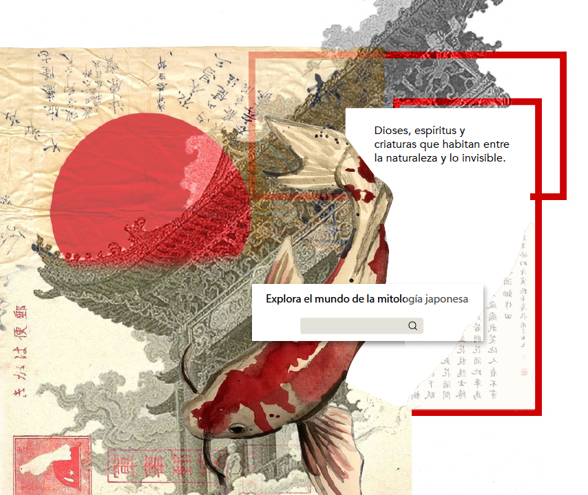
Dioses principales
Amaterasu
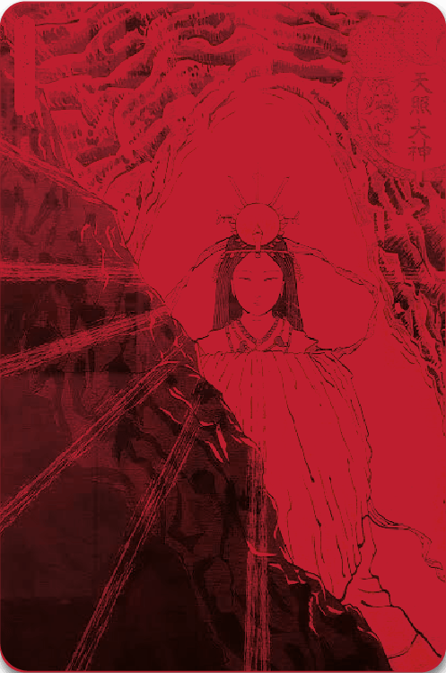
Tsukuyomi
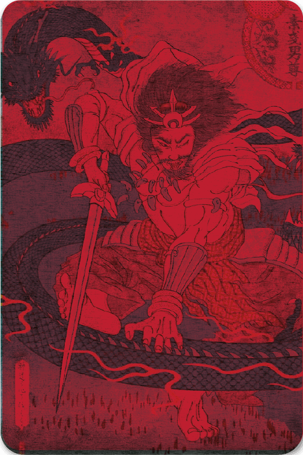
Susanoo
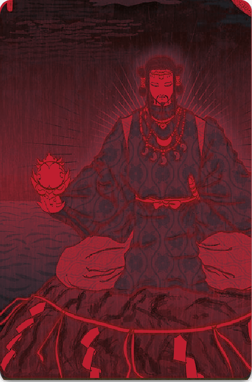
Izanami
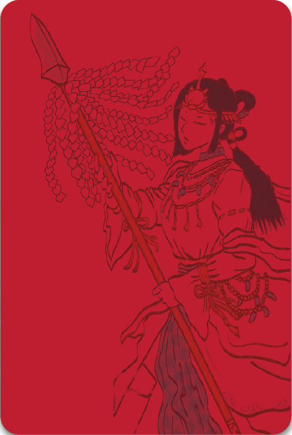
Criaturas Míticas
Kitsune
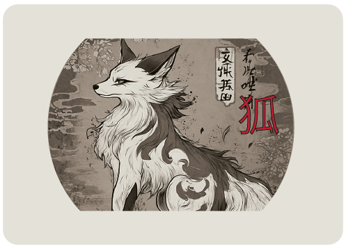
Tengu
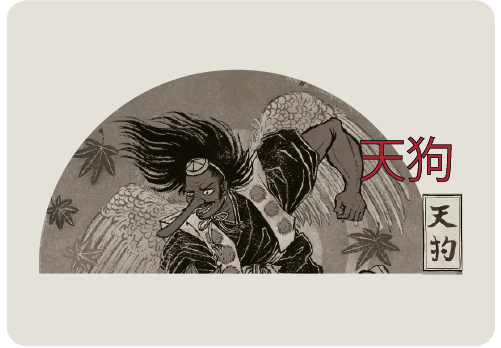
Ryū
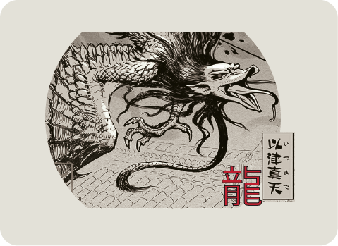
Kappa
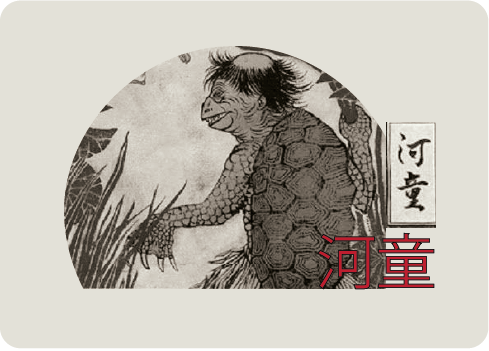
Mitos y relatos
Izanagi e Izanami
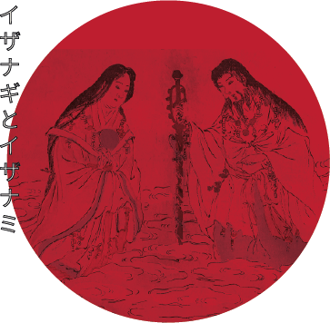
Susanoo y la serpiente
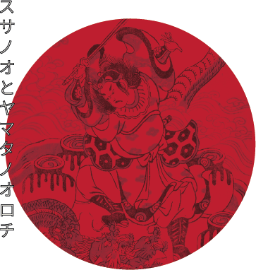
Mapa Mitológico
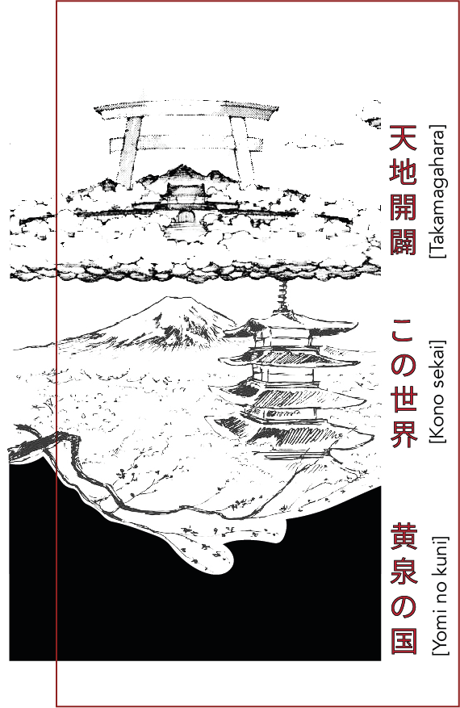
Kono Sekai
Mundo de los humanos.
Takamagahara
Reino celestial de los dioses.
Yomi
Reino de los muertos.